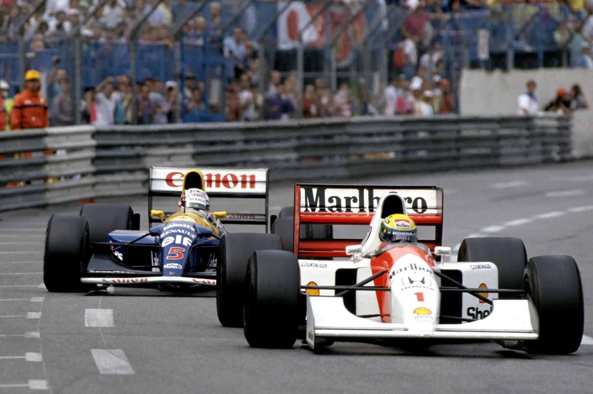

Începuturile (anii 1920-1940)
Înainte de a exista Formula 1, cursele de Grand Prix erau deja populare în Europa, mai ales în țări ca Franța, Italia și Marea Britanie. În anii 1920 și 1930, aceste competiții erau organizate independent și aveau reguli diferite, iar organizatorii și constructorii începeau să exploreze potențialul vitezei și al tehnologiilor inovative. În perioada interbelică, marile echipe de curse, precum Alfa Romeo, Mercedes-Benz și Auto Union (azi Audi), dominau competițiile cu mașini construite special pentru cursele de Grand Prix. Odată cu terminarea celui de-Al Doilea Război Mondial, în 1946, Federația Internațională de Automobilism (FIA) a început să elaboreze o serie de norme standard pentru cursele de Grand Prix, care să stabilească o bază pentru o competiție internațională unificată. Din acest moment, se conturează ideea unui Campionat Mondial de Formula 1, care avea să reunească cei mai buni piloți și cele mai avansate mașini de curse.
Lansarea Campionatului Mondial de Formula 1 (1950)
În 1950, FIA a organizat primul Campionat Mondial de Formula 1, deschizând oficial sezonul inaugural pe 13 mai, la Silverstone, în Marea Britanie. Acest prim sezon a inclus șapte curse, dintre care șase au fost curse de Grand Prix în Europa, iar una a avut loc la Indianapolis 500, în Statele Unite. Giuseppe Farina, pilot pentru Alfa Romeo, a devenit primul campion mondial, învingându-l pe colegul său de echipă, Juan Manuel Fangio, care avea să devină unul dintre cei mai renumiți piloți ai Formulei 1. Anii 1950 au fost marcați de dominația Alfa Romeo, Ferrari și Maserati, iar Fangio a câștigat cinci titluri de campion mondial, stabilind un record care a rămas neegalat până în anii 2000. În această perioadă, siguranța era minimă, iar mașinile erau construite aproape exclusiv pentru viteză, ceea ce a dus la numeroase accidente și la pierderi de vieți omenești în rândul piloților și spectatorilor.
Era de aur a Formulei 1 (anii 1960-1970)
În anii 1960, Formula 1 a început să devină o competiție globală. Echipele încep să colaboreze cu constructori de motoare și șasiuri, iar mărcile Lotus și Ferrari devin dominante. În această perioadă, Lotus a introdus inovații precum șasiul monococ, care a crescut semnificativ performanțele și siguranța. Acesta a fost și deceniul lui Jim Clark și Graham Hill, piloți britanici celebri, iar competițiile încep să atragă tot mai mulți fani. Anul 1970 a adus numeroase schimbări tehnice, în special în domeniul aerodinamicii. La fel de importantă a fost și îmbunătățirea măsurilor de siguranță, după accidentele grave care au afectat sportul în anii anteriori. În acest context, piloți ca Jackie Stewart și Niki Lauda au făcut presiuni pentru sporirea siguranței în sport, ceea ce a dus la modernizarea circuitelor și la impunerea unor reguli mai stricte privind echipamentele de siguranță.
Dominanța echipelor britanice și inovarea tehnologică (anii 1980-1990)
Anii 1980 au marcat o schimbare majoră în istoria Formulei 1, prin introducerea tehnologiei turbo. Echipelor precum McLaren, Williams și Lotus li se alătură Honda și Renault ca furnizori de motoare puternice. Aceasta a fost epoca unor piloți legendari, precum Ayrton Senna, Alain Prost și Nelson Piquet, iar rivalitatea dintre Senna și Prost a devenit una dintre cele mai intense din istoria sportului. Anii 1990 au adus îmbunătățiri semnificative în domeniul aerodinamicii și al electronicii, inclusiv controlul tracțiunii și telemetria. McLaren și Williams au dominat această perioadă, iar Michael Schumacher a început să-și construiască reputația ca fiind unul dintre cei mai mari piloți ai Formulei 1, câștigând titluri pentru Benetton și mai târziu pentru Ferrari.

Epoca modernă și dominația Ferrari și Mercedes (anii 2000 - prezent)
La începutul anilor 2000, Michael Schumacher și echipa Ferrari au stabilit un nou standard în Formula 1, câștigând cinci titluri consecutive între 2000 și 2004. Schumacher a devenit astfel cel mai titrat pilot al sportului la acea vreme, cu șapte titluri mondiale. Începând cu 2010, Sebastian Vettel a dominat pentru Red Bull Racing, câștigând patru titluri consecutive. Totuși, odată cu introducerea motoarelor hibride în 2014, Mercedes a preluat controlul, iar Lewis Hamilton a devenit figura centrală a competiției. Hamilton a reușit să egaleze recordul lui Schumacher de șapte titluri mondiale și a devenit unul dintre cei mai importanți piloți din istorie.
Formula 1 în prezent
Astăzi, Formula 1 este un sport global, cu fani din toate colțurile lumii și cu curse organizate pe toate continentele. FIA continuă să impună noi reguli pentru a crește siguranța și a reduce impactul ecologic al sportului, iar tehnologia din spatele mașinilor de F1 este în continuă evoluție. În 2022, au fost introduse noi reguli aerodinamice pentru a crește competitivitatea și a reduce diferențele de performanță între echipe. Odată cu această nouă eră, Max Verstappen, pilotul olandez de la Red Bull Racing, a devenit o forță dominantă în Formula 1. Verstappen și-a câștigat primul titlu mondial în 2021, într-un sezon remarcabil marcat de rivalitatea intensă cu Lewis Hamilton de la Mercedes. În cursa finală a sezonului de la Abu Dhabi, Verstappen a câștigat campionatul după o confruntare controversată, dar spectaculoasă, cu Hamilton, care a ținut fanii în suspans până în ultimul tur. De atunci, Verstappen a continuat să domine campionatul, câștigând titlurile din 2022 și 2023, stabilind noi recorduri și consolidând poziția Red Bull în fruntea sportului. Stilul său agresiv, abilitatea de a menține un ritm constant și talentul său extraordinar l-au transformat într-una dintre cele mai mari vedete ale Formulei 1 moderne. Sub îndrumarea lui Christian Horner, Red Bull Racing a construit un monopost extrem de competitiv, capabil să înfrunte cu succes rivalii Mercedes și Ferrari, iar Verstappen a reușit să valorifice această mașină la maximum.